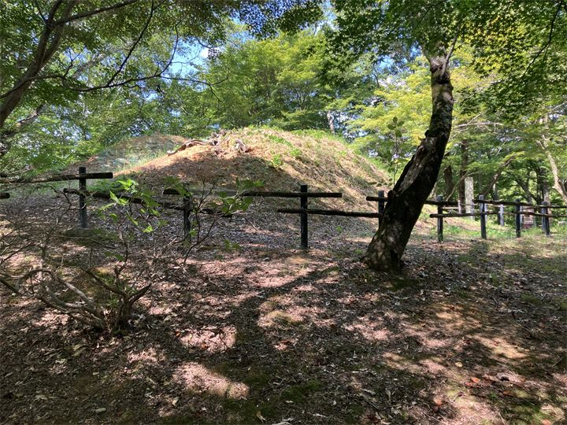

歴史公園内の古墳
三段築成の八角形墳として知られる終末期古墳です。 周辺の高松塚古墳やキトラ古墳と合わせて、飛鳥時代の歴史を感じながら散策できます。

中尾山古墳は、明日香村平田にある飛鳥時代終末期の古墳です。 三段築成の八角形墳として知られ、文武天皇陵の可能性がある古墳として注目されています。 高松塚古墳や牽牛子塚古墳にも近く、飛鳥時代の終末期古墳を巡る散策スポットの一つです。
| 営業時間 | 見学自由 |
|---|---|
| 定休日 | なし |
| 料金 | 無料 |
| 所要時間 | 約10分 |
| 駐車場 |
高松塚周辺地区第1駐車場
（徒歩約4分・無料） 高松塚周辺地区第2駐車場 （徒歩約3分・無料） 高松塚駐車場 （徒歩約4分・普通車 500円） 古墳前駐車場 （徒歩約8分・普通車 100円） 高松塚古墳東駐車場 （徒歩約9分・普通車 100円） |
| アクセス |
近鉄飛鳥駅から徒歩約11分。 周辺は坂道がありますので、歩きやすい靴がおすすめです。 |
| 地図 | 地図はこちら |

三段築成の八角形墳として知られる終末期古墳です。 周辺の高松塚古墳やキトラ古墳と合わせて、飛鳥時代の歴史を感じながら散策できます。
中尾山古墳は7世紀末から8世紀初頭に築造されたと考えられる終末期古墳です。 八角形の墳丘や精巧な石室構造から、天皇または皇族に関わる人物の墓と推定されています。 文武天皇の陵墓ではないかという説もあり、飛鳥時代から奈良時代へ移り変わる時代を伝える重要な史跡です。